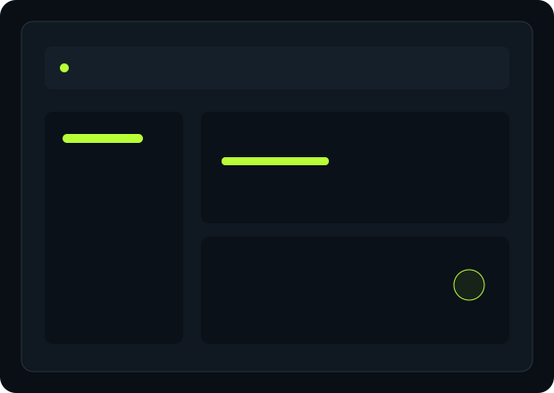

Display & refresh rate
Make sure Windows is actually using your monitor's intended refresh rate.
Windows settings, GPU drivers, FPS, input latency and network optimization — explained simply and tested step by step.

Before changing advanced settings, get Windows, your display and your background apps under control.

Make sure Windows is actually using your monitor's intended refresh rate.
Review Windows gaming features and per-game graphics preferences.
Reduce unnecessary background work without blindly disabling Windows services.
Check GPU drivers, CPU/GPU temperatures and clocks before troubleshooting FPS.
Don't apply twenty tweaks at once. Identify the bottleneck first.
Learn the difference between average FPS, 1% lows and frametime — and diagnose CPU, GPU, RAM and thermal limits.
View method →Use official NVIDIA or AMD drivers before trying obscure “FPS boost” downloads.
Refresh rate, V-Sync, FPS caps, mouse polling and supported low-latency technologies.
Read the checklist →Connection quality is more than the number beside “ping”. Check jitter, packet loss, server region and local congestion.
AtlasOS is an advanced Windows modification. It is optional, requires a supported reinstall process and should be treated as an experiment — not a guaranteed FPS button.
Read AtlasOS GuideBackup → reinstall → drivers → test →Use the same game, scene and settings. Change one variable, record the result, then keep or revert it.
Game-specific guides can sit on top of the same optimization foundation.
Performance Mode, FPS consistency, input delay and Windows.
Explore →Display, Windows and responsiveness fundamentals.
Guide coming nextCPU limits, graphics settings and frame pacing.
Guide coming nextGPU load, shaders, memory, thermals and network checks.
Guide coming nextShort, practical articles that explain what to check before applying advanced tweaks.
Build a clean Windows baseline before advanced tuning.
Read guide →Separate CPU, GPU, memory and software bottlenecks.
Read guide →Refresh rate, frame caps, polling and driver basics.
Read guide →Understand what actually affects online game consistency.
Read guide →For users who want to troubleshoot the details: advanced Windows configuration, power plans, timer behavior, GPU scheduling, services, startup analysis, network adapter settings and game-specific tuning.
Tell us your PC specs, game, FPS problem or latency issue. We can use that feedback to build more focused PCTweaker guides.
Use the contact page to send a suggestion, request a topic or report something that needs correcting.
Contact PCTweaker →Start with the free Windows optimization guide and build from there.